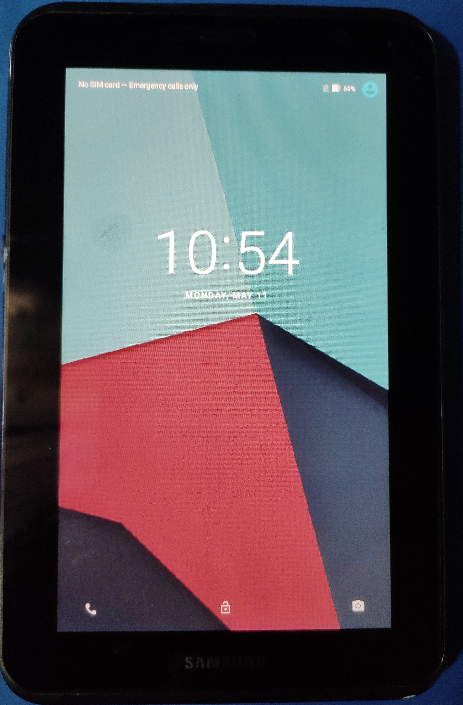

Samsung Galaxy Tab 2 7.0" (samsung-espresso7)
|
 Samsung Galaxy Tab 2 7.0 | |
| Manufacturer | Samsung |
|---|---|
| Name | Galaxy Tab 2 7.0 |
| Codename | samsung-espresso7 |
| Released | 2012 |
| Category | community |
| Original software | Android |
| postmarketOS kernel | 6.1 |
| Hardware | |
| Chipset | TI OMAP 4430 |
| CPU | Dual-core 1.0 GHz Cortex-A9 |
| GPU | PowerVR SGX540 |
| Display | 7.0 inches, 137.9 cm2 (~58.2% screen-to-body ratio) 600 x 1024 pixels, 16:9 ratio (~170 ppi density) |
| Storage | 8/16/32 GB |
| Memory | 1 GB |
| Architecture | armv7 |
| Type | tablet |
| Unixbench Whet/Dhry score | 442.9 |
{kind=link}
| USB Networking |
Works
|
|---|---|
| Flashing |
Works
|
| Touchscreen |
Works
|
| Display |
Works
|
| WiFi |
Works
|
| FDE |
Works
|
| Mainline |
Works
|
| Battery |
Works
|
| 3D Acceleration |
Broken
|
| Audio |
Broken
|
| Bluetooth |
Works
|
| Camera |
Broken
|
| GPS |
Broken
|
| Mobile data |
Unavailable
|
| SMS |
Unavailable
|
| Calls |
Unavailable
|
| USB OTG / USB-C Role switching |
Broken
|
| NFC |
Unavailable
|
| Accelerometer |
Works
|
|---|---|
| Magnetometer | |
| Ambient Light | |
| Proximity | |
| Hall Effect | |
| Barometer | |
| Power Sensor | |
| Camera Flash | |
|---|---|
| Keyboard | |
| Touchpad | |
| USB-A | |
| HDMI/DP | |
| Ir TX | |
| Ir RX | |
| Stylus | |
| Haptics | |
| Ethernet | |
| FOSS bootloader | |
|
This device is based on the TI OMAP 4430. See the SoC page for common tips, guides and troubleshooting steps |
Contributors
- Mighty
- AAT596 (testing in espressowifi variant)
Users owning this device
- H ro
- Mighty (Notes: Mainline go brr)
- Nieldv (Notes: 7" wifi, runs pmos, crack in digitizer)
- Piero-e (Notes: 7.0" inch WIFI / gt-p3110 / testing (samsung-espresso7) PostmaketOS (big thanks to Mighty))
- UltrasonicMadness (Notes: espressowifi version)
- Ungeskriptet (Notes: GT-P3110)
- Velikoss
- ZeroCool32 (Notes: WiFi only model, runs pmos, GT-P3110)
How to enter flash mode
- Press Power + Volume Down to enter download/odin mode.
- Press Power + Volume Up to enter recovery.
Hardware status (mainline)
| Status | Hardware | Info |
|---|---|---|
| Y | Panel | Samsung LTN070NL01 LCD panel |
| Y | Touchscreen | MMS136 |
| Y | SD cards | MicroSD card. |
| Y | Internal memory | |
| N | GPS | |
| Y | WiFi | Uses BCM4330B1. |
| Y | Bluetooth | Uses BCM4330B1. |
| Y | Buttons | There are 2 keys on GPIO: Volume up, Volume down. Power button works as well. |
| P | Charger | SMB136 WIP by mighty17 |
| Y | Fuel Gauge | MAX17042 |
| Y | PMIC | TWL6032 |
| N | Sound | Sound codec is WM1811. |
| Y | Accelerometer | BMA254 |
| Y | Magnetometer | YAS530 |
| Y | Proximity and Light | The P3100 variant has GP2A002, P3110 variant has AL3201. |
| N | Cameras | Front - SR030PC50 Back - S5K5CCGX (OMAP4 devices have Ducati firmware for cameras) |
| P | GPU | PowerVR SGX 540 needs out-of-tree kernel module, patched mesa, and some proprietary blobs |
| N | Modem | Only in espresso3g (P3100 and P5100) - XMM6262 |
Installation
| This device has recently been upgraded to the community category. Download a #Pre-built image from the download page or follow the general pmbootstrap instructions. |
Prerequisites: TWRP installed on the Tab, see the LineageOS wiki for instructions: espressowifi, use the espresso3g TWRP image if you have the espresso3g tablet.
Make sure to backup your data and store this somewhere safe if you care about the stock OS and/or your files!
Run pmbootstrap init and configure your installation. Flashing the image to the device is in 2 parts; the rootfs and the kernel. If this installation process does not go well for you, please try the alternative installation instead.
rootfs
There are 2 ways to go about installing the rootfs, depending on where you want to install it to.
- For an sdcard use:
pmbootstrap install --sdcard=/dev/sdX
Make sure to specify the mountpoint of the sdcard plugged into your computer.
- For installing on the internal filesystem use TWRP
pmbootstrap install --android-recovery-zip
pmbootstrap flasher --method=adb sideload
By default this will install on the (fairly limited) 1GB /system partition.
To specify a different partion (for example the 8/16 GB /data partition), add --recovery-install-partition=data to the first line.
- For installing on the internal /data partition use:
pmbootstrap install --android-recovery-zip --recovery-install-partition=data
When asked, boot your device into TWRP, wipe cache and your partion. Then go into advanced and start sideload mode, wait for this to finish.
kernel
After the rootfs is installed, insert the SDcard (if you used this) and boot the device into download mode. run
pmbootstrap flasher flash_kernel
This will flash the kernel to the device and reboot it. If you land in TWRP, just go to reboot and click system. It might complain about missing an OS, but do not worry! You should see some tuxes and be dropped in the OS!
Alternative install
In your PC, type these commands to generate and export the flashable installation (defaults flashing to /system partition), please see this section for more details:
pmbootstrap install --android-recovery-zip
pmbootstrap export
adb push /tmp/postmarketOS-export/*.zip /sdcard/
Pre-built image
| FIXME install instructions for Phosh and XFCE4 images FIXME |
Status
Supported variants
- samsung-espressowifi, which is almost identically similar to samsung-espresso3g, but with the exception that it has no modem.
Display
OMAPDRM works fine.
Display seems to be running at 45Hz due to the clock speed for 60Hz not working properly.
Battery
Fuel gauge works fine. The charger driver is WIP, if connected to usb during boot, then only it charges.
Camera
OMAP4 has different subsystem (Ducati) for camera which is non free. Probably will never work on mainline.
3D GPU Acceleration
3D acceleration works fine with out-of-tree code and blobs. As a result, these are kept outside of pmaports. SGX540 blobs also seem to be missing some EGL configs, so UIs like plasma-mobile do not work. Video decoding does not work as it is done by Ducati subsystem.
Phosh
This is no more needed, as you can unlock it with scale as 1, kept for future reference.
By default phosh has a scaling 1, this makes us unable to unlock the screen. So we need to set it to 0.75 (https://wiki.postmarketos.org/wiki/Phosh#Manual_Scaling) by adding
[output:LVDS-1] scale = 0.75
in /usr/share/phosh/phoc.ini.
You can revert it back to 1 to get better performance.
wlr-randr can also be used.
Known issues
WiFi not working after reboot
See https://gitlab.com/postmarketOS/pmaports/-/issues/1211
Fixes with patch in kernel: https://github.com/hansemro/kc1-linux/blob/v5.16.x/patches/0006-Add-clk32kg-to-twl6030.patch
Graphic desktop not launching
For Phosh (and maybe other wayland desktops?): create a .sh file in /etc/tinydm.d/env-wayland.d/ and add the following text export MESA_LOADER_DRIVER_OVERRIDE=pvr. See https://gitlab.com/postmarketOS/pmaports/-/merge_requests/2790
Non-free unofficial GPU support
As said in the Status section, GPU support can be enabled by copying additional PostmarketOS pmaports in your work directory, called pvrports.
pvrports are basically non-free PowerVR blobs and quirks with Phosh and Plasma Mobile, and not specific for this device. This means that any device that has a PowerVR SGX Series 5 GPU could be enabled by adding this repository.
See also
Mainline WIP kernel:
Pvrports (additional non-free pmaports):
Screenshots
Mate on Samsung Galaxy Tab 2 7.0
Mate on Samsung Galaxy Tab 2 7.0
Phosh (5.12 kernel, espressowifi) on Samsung Galaxy Tab 2 7.0
{kind=link}
{kind=link}
{kind=link}
Videos
- Showcasing Plasma Mobile: https://youtu.be/7DCXtpDmrPQ
- Showcasing Phosh: https://youtu.be/uG7LSFHO_Vg